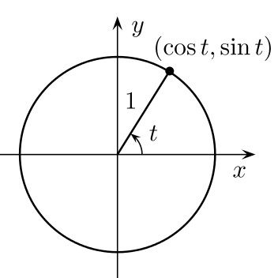

MAT100 for AM og PR
Uke 36
08.09.2014
NB: Dette var kun supplerende slides. Mesteparten av forelesningen foregikk på tavlen
Sist uke
- Vektorer
- Funksjoner
- Litt om trigonometriske funksjoner
Vektorer. Husk:
Projeksjon og dekomposisjon
Kan beregnes ved hjelp av skalarproduktet:
$$u_{|| v} = \frac{u\cdot v}{|v|^2} v, \quad u_{\perp v} = u - u_{|| v}$$
Funksjoner. Husk:
$$y = f(x), \quad x \in D_f$$

La $f = x^2$ og $g = \frac{x}{x+1}$. Hva blir komposisjonen $f \circ g$?
Løsning
Husk at $(f \circ g)(x) = f(g(x))$. Vi får dermed
$$ \begin{align*} f\left(\frac{x}{x+1}\right) &= \left(\frac{x}{x+1}\right)^2 \\ &= \frac{x^2}{(x+1)^2}. \end{align*} $$
Finn den omvendte/inverse til funksjonen
$$y=f(x) = \sqrt{2x+1}$$
Løsning
Husk at den omvendte til $f$ er funksjonen $f^{-1}$ som er slik at
$$(f^{-1} \circ f)(x) = x, \quad (f \circ f^{-1})(x) = x.$$
Finnes kun dersom $f$ er en-til-en!
Ser at $D_f$ er $\,x \geq -1/2\,$, og $V_f$ er $\,y \geq 0\,$. Anta
$$\sqrt{2x_1 + 1} = \sqrt{2x_2 + 1}.$$
Da blir $2x_1 + 1 = 2x_2 + 1$, så $x_1 = x_2$. Altså: En-til-en.
Får
$$
\begin{align*}
y &= \sqrt{2x+1} \\
y^2 &= 2x+1\\
x &= \frac{1}{2}\left(y^2 - 1\right)
\end{align*}
$$
Inversen er altså $\,y = \frac{1}{2}(x^2 - 1)\,$, med $\, x \geq 0$.
Trigonometriske funksjoner. Husk:
| Vinkler og radianer |
Sinus, kosinus og enhetssirklen |

|

|
|---|
Denne uken
- Mer om trigonometriske funksjoner
- Eksponential- og logaritmefunksjoner
- Grenser og kontinuitet (Kap. 4)
Trigonometriske identiteter
Noen nyttige konsekvenser:
$$ \begin{align*} \sin 2t &= 2\sin t \cos t\\ \cos 2t &= \cos^2 t - \sin^2(t)\\ \sin^2 t &= \frac{1}{2}(1-\cos 2t)\\ \cos^2 t &= \frac{1}{2}(1+\cos 2t) \end{align*} $$
Hvorfor?
For eksempel:
$$\begin{align*}\cos 2t = \cos(t+t) &= \cos t \cos t - \sin t \sin t \\&=\cos^2 t - \sin^2 t\end{align*}$$
og $$\begin{align*}\frac{1}{2}(1-\cos 2t) &= \frac{1}{2}(1-(\cos^2t - \sin^2 t)) \\ &= \frac{1}{2}(1-\cos^2 t + \sin^2 t) \\ &= \frac{1}{2}(\sin^2t + \sin^2t) \\ &= \sin^2 t. \end{align*} $$
Kan brukes til å løse ligninger med trigonometriske funksjoner.
Eksempel: Løs ligningen $\quad \frac{\sin x}{\sqrt{6}} = \frac{\sin \pi/4}{2}$.
Har
$$ \begin{align*} \frac{\sin x}{\sqrt{6}} &= \frac{\sin \pi/4}{2}\\ \frac{\sin x}{\sqrt{6}} &= \frac{1/\sqrt{2}}{2}\\ \sin x &= \frac{\sqrt{6}}{2\sqrt{2}} = \frac{\sqrt{6/2}}{2} = \frac{\sqrt{3}}{2}. \end{align*} $$
Dermed er $\,x=\pi/3\,\,$ en løsning. Er det flere? Ja!
Har
$$
\sin(\pi - x) = \sin x,
$$
så $\,\,\pi - \pi/3 = 2\pi/3\,\,$ er også en løsning.

Grafen til tangens:
Regneregler for eksponentialfunksjoner
Vi har for eksempel:
$$ \begin{align*} & a^0 = 1\\ &(a^x)^y = a^{xy}\\ & a^x \cdot a^y = a^{x+y}, \quad \frac{a^x}{a^y} = a^{x-y} \\ &\frac{a^x}{b^x} = \left(\frac{a}{b}\right)^x, \quad a^x \cdot b^x = (ab)^x \end{align*} $$
Disse reglene må fås "inn i fingrene". Regn mange oppgaver!
Løs ligningen $\quad 8^{x-1} = 32 \cdot 2^x.$
Vi har
$$
\begin{align*}
8^{x-1} &= 32 \cdot 2^x\\
(2^3)^{x-1} &= 2^5 \cdot 2^x \\
2^{3x-3} &= 2^{5+x}
\end{align*}
$$
Dermed må: $\quad 3x-3 = 5+x$
Så $x=4$.
Regneregler for logaritmefunksjoner
Vi har for eksempel:
$$ \begin{align*} & \log_a(1) = 0\\ &\log_a(x) = \frac{\ln x}{\ln a}\\ &\log_a(x^r) = r\log_a(x)\\ & \log_a(xy) = \log_a(x) + \log_a(y)\\ &\log_a\left(\frac{x}{y}\right) = \log_a(x)-\log_a(y)\\ \end{align*} $$
Løs ligningen $\quad \ln(x^2+1) - 2\ln x = 2 \ln 5 - 4 \ln 2$.
Vi har
$$
\begin{align*}
\ln(x^2+1) - 2\ln x &= 2 \ln 5 - 4 \ln 2\\
\ln(x^2+1) - \ln(x^2) &= \ln(5^2) - \ln(2^4)\\
\ln\left(\frac{x^2+1}{x^2}\right) &= \ln\left(\frac{5^2}{2^4}\right)\\
\frac{x^2+1}{x^2} &= \frac{5^2}{2^4}\\
16(x^2+1) &= 25x^2 \\
x^2 &= 16/9,
\end{align*}
$$
Dermed må: $\quad x = 4/3\,$. (Kan ikke ha negative verdier av x siden vi skal ta $\,\ln x\,$ i opprinnelig ligning).
Regnereglene til $a^x$ og $\log_a x$ henger sammen, fordi dette er omvendte funksjoner.
For eksempel: